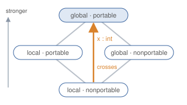

News
- 2026I joined ETH Zürich as an Assistant Professor in Computer Science.
- 2026Papers at OOPSLA'26 (Slice), ICFP'26 (Mode Crossing), ECOOP'26 (NEST) and TACAS'26 (SER).
- 2026Teaching the Software Engineering Seminar at ETH with Michalis Kokologiannakis and Ralf Jung.
- 2026On the program committees of POPL'27 and CSL'27.
- 2025My PhD thesis, Guarantees by Construction, won the VERSEN 2025 award.
Research projects

Safe and verified programming in OxCaml
OxCaml is Jane Street's extension of OCaml for safe low-level and parallel programming. Its modes track whether a value can escape its stack frame or be shared between threads, which gives safe stack allocation and data-race freedom. Mode crossing lets integers, immutable data and other suitable types move to a stronger mode automatically, which removes many annotations; it is implemented in the OxCaml compiler and proved sound in Rocq.
Vox is a fork of the OxCaml compiler that checks specifications at compile time. Refinement types are proved by Z3, proofs are written as ghost code that is erased before code generation, and uniqueness modes make ghost ownership tokens affine. With specifications, people can check what a program does by reading its specs instead of every line, which matters more as more code is written by AI agents.
With Benjamin Peters, Diana Kalinichenko, Liam Stevenson, Aspen Smith, Derek Dreyer and Richard A. Eisenberg.

Network verification
Network outages are often caused by configuration mistakes spread over many devices. NetKAT describes a whole network as one program with an equational theory. Our verifier KATch checks reachability, isolation and similar properties, typically in well under a second, and returns a counterexample when one fails. StacKAT extends this to unbounded state such as MPLS label stacks.
Networks also run stateful services that talk to each other. NEST compiles session-type protocols into monitors that run on programmable switches and drop messages that break the protocol, and SER decides whether a stateful networked program is serializable, even with unboundedly many concurrent requests. These verifiers are decision procedures on automata and Petri nets; related work on automata includes Boa, a single fast minimization algorithm for deterministic, weighted and probabilistic automata.
With Nate Foster, Alexandra Silva, Jana Wagemaker, Guy Amir, Mark Moeller, Tobias Kappé, Dexter Kozen, Lily Saada, Ernest Ng, Jens Kanstrup Larsen, Alceste Scalas, Mark Barbone, Nicolas Amat, Olivier Savary Belanger, David Darais, Cole Schlesinger, Steffen Smolka and Thorsten Wißmann.

Verified message-passing concurrency
Programs that communicate over channels or share locks can deadlock or leak memory. We design type systems and separation logics for higher-order programs with session-type protocols and locks, in which well-typed or verified programs never deadlock because the graph of threads and channels stays acyclic. Later work verifies that programs also compute the right results while following multiparty and dependent protocols. All proofs are mechanized in Coq/Rocq using Iris.
With Robbert Krebbers, Stephanie Balzer and Jonas Kastberg Hinrichsen.

Exact inference for probabilistic programs
Probabilistic programs describe statistical models, and inference computes the distributions they define. Slice finds where continuous random values only matter through comparisons with finitely many constants, and rewrites the program into a discrete one that exact solvers can handle. Earlier work showed that conditioning on events of probability zero leads to paradoxes, and how infinitesimal probabilities resolve them.
With Katherine Wu, Kevin Batz and Alexandra Silva.
Prospective students
PhD. I'm looking for PhD students who want to work on the topics above. At ETH, the usual route is to email me first and then apply through the department's doctoral program; with a bachelor's degree, the Direct Doctorate is the way in. Send me a short email with [PhD] in the subject, your CV, and a few lines about what you would like to work on and why.
Master's theses and semester projects. If you are a student at ETH, I supervise theses and projects in these areas. Possible topics include a fast symbolic verifier for StacKAT, LTL queries for NetKAT, verified programs and libraries in Vox, and type systems for liveness and termination of concurrent programs. Email me with [Thesis] in the subject.
A strong mathematical background helps, as does experience with proof assistants, compilers or verification tools.
Working with companies
I work with Jane Street on OxCaml: the type system design from Mode Crossing is implemented in the OxCaml compiler and used in Jane Street's code base, and Vox builds compile-time verification on top of it. If your company has systems where stronger guarantees would help, I'm open to joint research projects, research gifts, internships for my students, and talks or workshops. Email me.
Publications
Photos
Some photos I took on walks and hikes. There are more in the gallery.


Notes
I sometimes write up my notes because it makes me think a bit more carefully and helps me remember. If you have any comments, questions, or ideas, don't hesitate to send me an email :)
Show 15 more notes
You can find more on my blog.
Talks
| June 2025 |
StacKAT: Infinite State Network Verification
PLDI'25
|
| 6 Feb. 2024 |
Deadlock-Free Separation Logic: Linearity Yields Progress for Dependent Higher-Order Message Passing
EPFL
|
| 18 Jan. 2024 |
Deadlock-Free Separation Logic: Linearity Yields Progress for Dependent Higher-Order Message Passing
POPL'24
|
| 16 Jan. 2024 |
Probabilistic Programming Session Preview
POPL'24 (session preview)
|
| 15 Jan. 2024 |
Verified Message-Passing Concurrency in Iris: Separation Logic Meets Session Types
POPL'24 (tutorial, with Jonas Kastberg Hinrichsen and Robbert Krebbers)
|
| 11 Dec. 2023 |
The Iris Masterplan
PL Retreat, Cornell University
|
Show 26 more talks
Teaching
| 2026 | Teaching the Software Engineering Seminar at ETH Zürich with Michalis Kokologiannakis and Ralf Jung. |
| 2026 | OxCaml Basics, a three-hour course for Jane Street interns and engineers, with lecture notes, slides and exercises. |
| 2024 | Helping Nate Foster teach Certified Software Systems (CS6115) at Cornell University. |
| 2023 | Helping Robbert teach Coq & separation logic in Program Verification course at RU. |
Show 9 more
| 2022 | Assisting Robbert with the supervision of Menzo van Kessel's bachelor thesis project about implementing a type checker and interpreter for MPGV. |
| 2022 | Helping students prepare their presentations for the MFOCS seminar course at RU. |
| 2022 | Helping Freek teach Coq in the Type Theory course at RU. |
| 2022 | Helping Robbert teach Coq & separation logic in Program Verification course at RU. |
| 2021 | Helping Freek teach Coq in the Type Theory course at RU. |
| 2021 | Helping students prepare their presentations for the MFOCS seminar course at RU. |
| 2020 | Helping Freek teach Coq in the Type Theory course at RU. |
| 2020 | Assisting Robbert with the master thesis project of Edoardo Putti about mechanizing incorrectness separation logic in Coq. |
| 2020 | Assisting Robbert with the Software Verification course at TU Delft. |
Academic Service
| 2027 | POPL'27 PC |
| 2027 | CSL'27 PC |
| 2027 | Website co-chair for PLDI'27 |
| 2026 | OOPSLA'26 Review Committee |
| 2026 | TFP'26 PC |
| 2026 | PLMW @ SPLASH/ISSTA'26 committee |
| 2026 | Website chair for ICFP'26 |
| 2025 | ICFP'25 PC |
Show 21 more
| 2025 | PLDI'25 PC |
| 2025 | ECOOP'25 PC |
| 2025 | PLACES'25 PC |
| 2025 | Website co-chair for ICFP/SPLASH'25 |
| 2025 | Website co-chair for ICFP'25 |
| 2024 | Website co-chair for ICFP'24 |
| 2024 - ongoing | PLMW social media chair |
| 2024 | Reviewing for ECOOP'24 |
| 2023 | Reviewing for PLDI'23 |
| 2023 | Reviewing for ITP'23 |
| 2023 | Reviewing for LICS'23 |
| 2023 | ESOP'23 AEC |
| 2022 | Reviewing for POPL'23 |
| 2022 | Reviewing for CSL |
| 2022 | Reviewing LMCS |
| 2022 | Reviewing OOPSLA |
| 2022 | PLDI'22 AEC |
| 2022 | ESOP'22 AEC |
| 2021 | VCA for Behavioural Types: Bridging Theory and Practice |
| 2020 | Reviewing for ESOP'21. |
| 2020 | Reviewing for ICFP'20. |